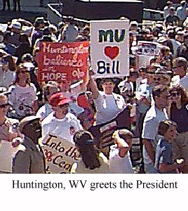
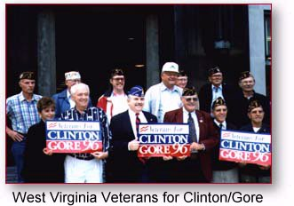

On the Horizon


Tipper Gore will be in
Charleston November 4
Call Clinton/Gore headquarters for details —
Come out and show your support!
of the campaign, we need your help
energizing your community to
GET OUT THE VOTE!Call the Clinton/Gore office number
below to volunteer.West Virginia Highlights
August 25 - 21st Century Express — HuntingtonClinton-Gore '96 Headquarters
405 Capitol Street
Suite 803
Charleston, WV 25301Phone: 304-347-8681
Fax: 304-347-3160
State Director: Stephanie Mathews
West Virginia Democratic
Coordinated Campaign
1038 Quarrier Street
Charleston, WV 25301Phone: 304-342-8121
Fax: 304-342-8122
The Coordinated Campaign is a distinct entity,
directed by the Democratic National Party
and the State Democratic Parties, and designed
to elect Democrats to all levels of office.
Paid for by Clinton/Gore ’96 General Election Committee, Inc.